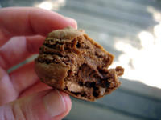
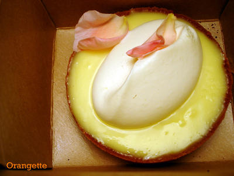
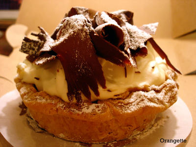
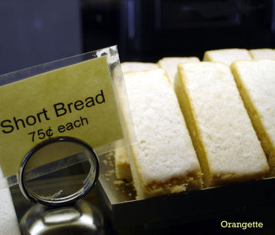
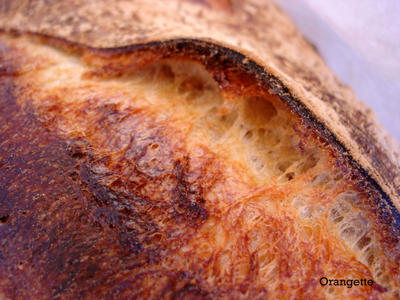

San Francisco: no famine in sight
I’m no jet-setter, but when it comes to planes, trains, and automobiles, I generally aim for the first, funds permitting. For someone who lives only an hour and a half by car from Vancouver, three hours from Portland, and a dozen or two (depending on your route) from San Francisco, I’ve put relatively few miles on the odometer. My road-trip record is what some might call tragic, and about a week ago, with summer in full bloom and my second-floor apartment feeling stuffy, we began to agree. So we packed our bags and crammed my old, bruised cooler against some freeway famine that was surely looming, and we sped south. It was as simple as that. First there was I-5, a six-lane concrete plain; then there were the little towns, the runaway truck ramps, the stands selling salmon jerky and ice cream; and around a corner, there was a damp, salty wind, and then the coast.

Eighteen hours, one night in a Super 8, and four score switchbacks from Seattle, we found San Francisco, all hills and fog and farmers’ markets and no famine in sight.* It’s a city I’ve long loved, but with the proper partner, I went from smitten to very, very serious. Acme Bread to Zuni Café, we ate it up.
And thank goodness there were two of us, because sharing was a necessity if we were to have room for it all, from Aladdin Market and Deli (thank you, Hillel) to Berkeley Bowl, Blue Bottle Coffee Company, Breads of India, Boulangerie, Café Fanny, Ferry Plaza, Las Camelias, La Taqueria, and XOX Truffles; and from pain au levain to sheep’s milk ricotta gnocchi, falafel, Okinawan purple sweet potatoes, coffee from Yemen, naan with shredded coconut and fresh dill, cannelés, Belgian sugar tarts, fresh morels and French macarons, agave margaritas, tacos filled with shredded chicken in a tomato and chile sauce, and the tiniest, most sigh-inducing chocolate truffles to ever cross these lips. We flitted here and there in search of this and that, meeting with such success that I believe I might have actually uttered the words, “I’m tired of eating.” But only once or twice.
{kind=link}
{kind=link}
{kind=link}
No amount of food fatigue, however, could keep us from Tartine, a bakery worth a thousand miles. Perched on a street corner in the Mission District, Tartine’s walls are bulging at all hours with an eager cult following of customers lined up for morning pastries or hot, crusty country bread at four in the afternoon, or haggling for tables on the sidewalk outside. Its offerings straddle old-fashioned Americana and French country-chic, from coconut cream tarts to a cake aux olives, each perfectly messy or neat, as the case requires. Brandon flew into a frenzy the moment we stepped up to the counter, overwhelmed by the sight of an open-face croque monsieur with melting slices of summer tomato and a lemon meringue cake the size and shape of a shoebox, covered with burnished spikes. Clearly, one visit would not suffice. There was too much to taste—and to photograph. There were meringues studded with Scharffen Berger nibs, each little mountain-shaped cookie craggy and light, its sweetness delicately balanced by the light bitterness of roasted cacao beans.
{kind=link}
And there was the lemon cream tart, a pool of puckery lemon curd in a sweet, crunchy shortbread shell,

and its frumpy stepsister, the the banana cream tart, an über-flaky crust coated with caramel and dark chocolate and filled with vanilla pastry cream and sliced bananas, the whole topped with barely sweetened whipped cream and thick chocolate curls.
{kind=link}

We ogled the shortbread, tight-crumbed and buttery 1”-by-4”s,
{kind=link}

and the morning buns, knots of flaky dough perfumed with cinnamon and orange. And when it came time to turn the car around, I took a bag of muesli for breakfast on the road and Brandon seared his thighs with a lapful of straight-from-the-oven country bread, possibly the best use of flour I’ve tasted anywhere: thick-crusted, with a moist, chewy crumb full of dime-sized air holes.
{kind=link}

The hours fly by when you’re well-fed—whether in a city on the coast or in a car, or later, at a keyboard in Seattle, a crumb-filled plate at your elbow.
{kind=link}
*There was also no consistently available Internet connection, so I appreciate your patience, gentle reader.